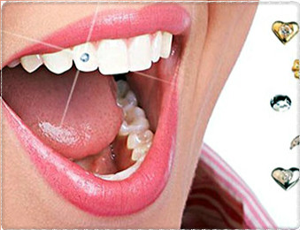
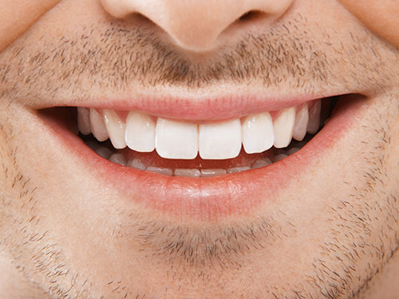

Эстетическая стоматология включает в себя:
а) композитную реставрацию зубов специальными средствами и материалами;
б) реставрацию зубов при помощи виниров, люминиров;
в) исправление прикуса и выравнивание всего зубного ряда;
г) отбеливание зубов.
Хотя и по ныне, для многих эстетическая стоматология – это просто осветлить зубы. В наши дни стыдно иметь некрасивые зубы. А потому неровные зубы, зубы с заметными издали пломбами из разных материалов, зубы с измененным цветом доставляют своим обладателям огромное количество чисто психических неудобств, неминуемо приводящих к снижению самооценки и как следствие этого к проблемам со здоровьем и личной жизнью.
Эстетическая реставрация зубов и стоматология позволяет не только вернуть зубам их естественную красоту, но и сделать их лучше, чем они были от природы. Сегодня при помощи методов косметической стоматологии врачи ликвидируют щели между зубами, которые выглядят неэстетично и представляют собой хороший плацдарм для размножения болезнетворных микроорганизмов. Кроме того, эстетическую стоматологию активно используют для коррекции слишком коротких или узких зубов и зубов, занимающих в ряду не вполне правильное положение.
Давайте теперь в вкратце остановимся на каждом из методов.
1) Композитная реставрация зубов – это одно из направлений в эстетической стоматологии, предусматривает заполнение кариозной полости специальным раствором, восстановление целостности зуба, как передних, так и боковых.
2) Реставрацию зубов при помощи виниров и люминиров – это использование дополнительного стоматологического материала в виде специальных керамических пластинок. Такой метод эстетической стоматологии используется чаще для передних зубов, при нарушении целостности зуба или при имеющемся дефекте расположении зубов, например, щель между зубами.
3) Исправление прикуса и выравнивание всего зубного ряда выполняется при помощи установки специальных пластин или брекетов. Под воздействием таких конструкций, зубной ряд приобретает правильное расположение.
4) Отбеливание зубов в условиях стоматологической клиники позволяет добиться положительного результата и подарить пациенту белоснежную улыбку.
5) Также к одному из видов эстетической стоматологии, является установка или украшение зубов скайсами. Скайсы – это ювелирные стоматологические украшения.